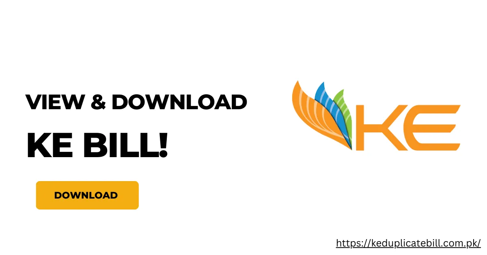

اپنا کے ای ڈپلیکیٹ بل آن لائن دیکھنے اور ڈاؤن لوڈ کرنے کا طریقہ – مکمل رہنمائی
کے الیکٹرک (KE) کراچی کا بنیادی بجلی فراہم کرنے والا ادارہ ہے جو گھروں، کاروباروں اور صنعتوں کو قابلِ اعتماد بجلی فراہم کرتا ہے۔ اگر آپ کا بل گم ہو گیا ہے یا آپ کو ریکارڈ رکھنے کے لیے ایک کاپی درکار ہے تو کے ای کا ڈپلیکیٹ بجلی بل حاصل کرنا اب پہلے سے کہیں زیادہ آسان ہے۔
اپنا کے ای ڈپلیکیٹ بل آن لائن حاصل کرنے کا طریقہ
اپنا کے ای ڈپلیکیٹ بل آن لائن دیکھنا اور ڈاؤن لوڈ کرنا بالکل آسان ہے۔ ان مراحل پر عمل کریں:

- ویب سائٹ پر جائیں: براہِ راست keduplicatebill.com.pk پر جائیں۔
- اپنا 13 ہندسوں کا اکاؤنٹ نمبر درج کریں: اپنے بل پر درج 13 ہندسوں کا اکاؤنٹ نمبر تلاش کریں اور اسے دیے گئے خانے میں ٹائپ کریں۔

📌 نوٹ
اگر آپ کو اکاؤنٹ نمبر تلاش کرنے میں دشواری ہو، تو اپنے بل کے اوپر والے حصے میں "Consumer Details" سیکشن میں دیکھیں۔
کے ای ڈپلیکیٹ بل واٹس ایپ پر حاصل کریں
کے الیکٹرک کی واٹس ایپ سروس کے ذریعے اب کراچی میں کے ای ڈپلیکیٹ بل حاصل کرنا بہت آسان ہو گیا ہے۔
کے ای واٹس ایپ سروس شروع کرنے کا طریقہ
کے ای کے ساتھ واٹس ایپ پر رابطہ قائم کرنا بالکل آسان ہے۔ آپ دو طریقوں سے چیٹ سسٹم اوپن کر سکتے ہیں:
- کیو آر کوڈ اسکین کریں: اپنے واٹس ایپ میں جا کر دیا گیا کیو آر کوڈ اسکین کریں۔
- نمبر محفوظ کریں: نمبر 0348-0000118 اپنے کانٹیکٹس میں محفوظ کریں اور ایک سادہ سا "Hi" میسج بھیجیں۔
واٹس ایپ پر دستیاب سہولیات:
- ڈپلیکیٹ بل ڈاؤن لوڈ: فوراً پی ڈی ایف یا امیج کی صورت میں بل حاصل کریں۔
- بل چیک: بل کی رقم یا ادا شدہ بل کی کاپی دیکھیں۔
- بجلی کی صورتحال: بجلی کی بندش یا مسائل کی اطلاع دیں۔
- لوڈ شیڈنگ شیڈول: اپنے علاقے کا لوڈ شیڈنگ شیڈول دیکھیں۔
- بلنگ شکایات: بل سے متعلق کسی مسئلے کی شکایت درج کریں۔
ایس ایم ایس کے ذریعے کے ای ڈپلیکیٹ بل
آپ ایس ایم ایس کے ذریعے بھی اپنے بل کی معلومات حاصل کر سکتے ہیں:
- اپنے فون کی میسجنگ ایپ کھولیں
- ٹائپ کریں: BILL [آپ کا 13 ہندسوں کا اکاؤنٹ نمبر]
- بھیجیں: 8119
کے الیکٹرک سے رابطہ
اگر آپ کو مدد کی ضرورت ہو تو کے الیکٹرک سے رابطہ کریں:
- ہیلپ لائن: 118 (24/7)
- واٹس ایپ: 0348-0000118
- ای میل: customercare@ke.com.pk
- ویب سائٹ: www.ke.com.pk